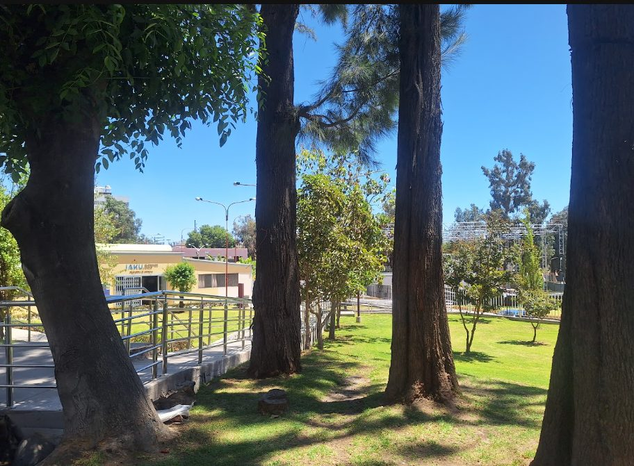
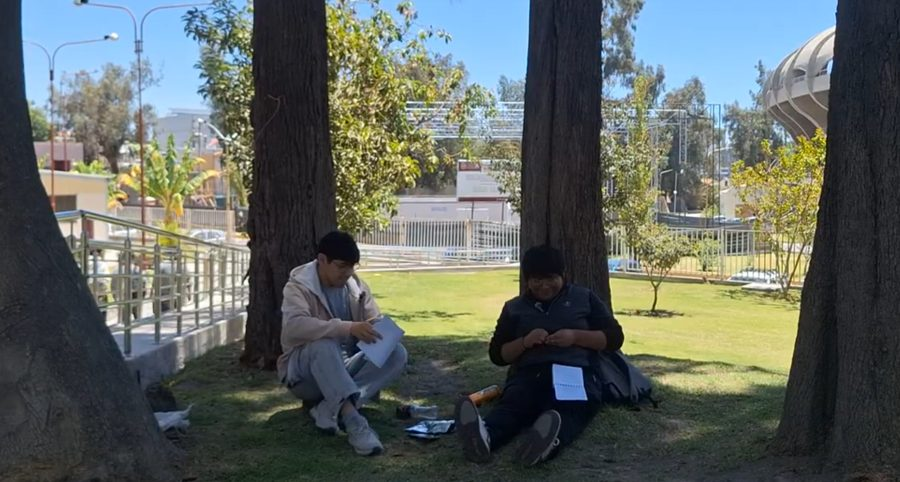
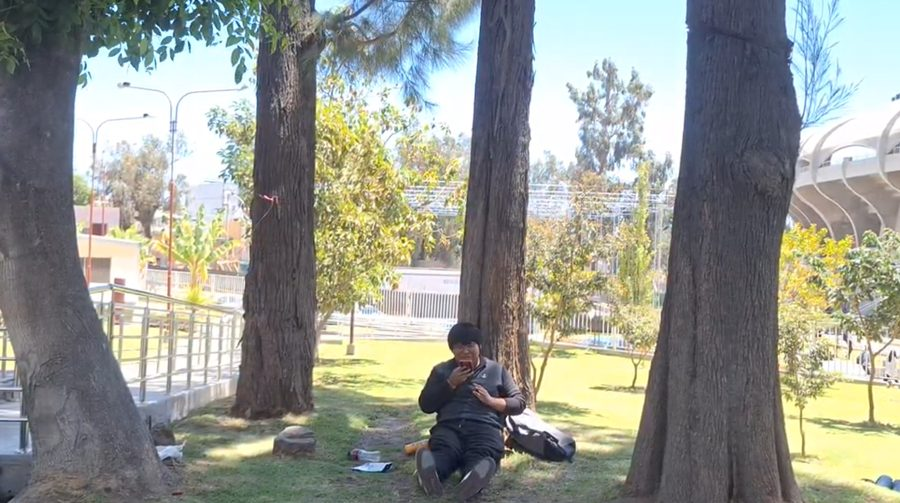
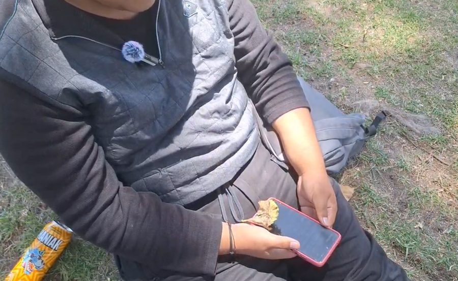
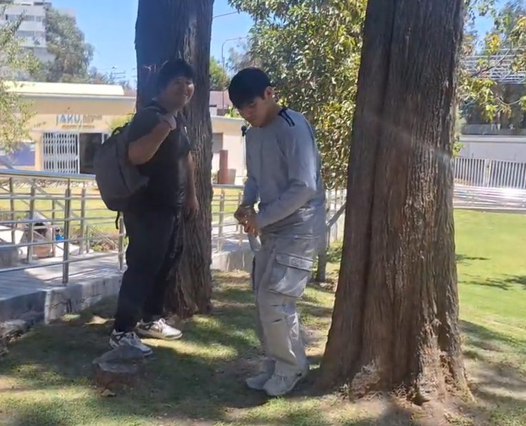

Taller de Narrativa Digital · Versión D · Sostenibilidad en campus y ciudad
Sombra compartida
Tres árboles miran cómo pasa el campus. Una botella, un papel, un tomatodo: lo que dejamos o recogemos se nota en la sombra que compartimos.
Para la comunidad universitaria y para quien cruza el campus a diario.

El video
Una historia de 9 minutos con tres estudiantes y tres árboles que hablan en voz en off.
Ya está grabado
Las escenas ya se grabaron y se están editando. Mientras tanto, puedes ver las fotos del rodaje y leer la historia toma por toma.
- Duración prevista
- 9 minutos, en 6 tomas
- Voces en off
- Sabio, Gruñón y Joven (los tres árboles)
- Alternativa en texto
- El diálogo completo de cada toma está abajo, en “Leer el diálogo”.
La historia en 6 tomas
La primera y la última toma tienen el mismo encuadre. Lo que cambia es lo que hay sobre el pasto.
Cada tramo es proporcional a la duración de su toma. Los tramos más oscuros, a los extremos, son los dos planos idénticos.
-
El desastre
Tres estudiantes repasan apuntes entre envolturas de galleta y una botella de plástico. Suena una alarma, salen corriendo y dejan la basura sobre las raíces. Los árboles comentan.

Toma 1 · repasando antes de salir corriendo Leer el diálogo
Estudiante 1: No entiendo nada de esta lectura. El profe de Estadística no va a perdonar ni un minuto de tardanza.
Estudiante 2: Ya, relájate. Come algo, te va a bajar el azúcar. (Señala los restos de galleta). ¡Uy, son las 10:05!
Estudiante 1: ¡Corre, corre!
Los estudiantes agarran sus mochilas y salen corriendo. Dejan la basura sobre las raíces. Silencio, solo el viento.
Gruñón (voz en off): ¡Bravo! ¡Excelente! ¡Aplausos para la juventud del futuro! Otra botella para mi colección. A este paso me van a brotar tapas de refresco en lugar de hojas.
Sabio (voz en off): Inhala, vecino... exhala. Tienen exámenes. La mente humana se llena tanto de números que olvidan dónde pisan.
Joven (voz en off): Disculpen... ¿qué es un examen? ¿Es esa plaga que les hace tirar hojas que no se pudren?
Gruñón (voz en off): Peor, renacuajo. Se llama “indiferencia”.
1 min 45 s
-
El contraste urbano
Calle de asfalto, tráfico y sol fuerte. Corte al campus: sombra espesa y hojas que se mueven. Los árboles se preguntan por qué no se cuida el lado con sombra.
Leer el diálogo
Joven (voz en off): Pero... si allá afuera el aire raspa y quema, ¿por qué no cuidan este lado donde hay sombra?
Sabio (voz en off): Porque viven en una ciudad de cemento y creen que la naturaleza es solo un adorno en su camino.
Gruñón (voz en off): Adorno mi corteza. ¡Somos el único aire acondicionado que funciona gratis en diez cuadras a la redonda y nos pagan con basura!
1 min
-
El regreso y la reflexión
El Estudiante 1 vuelve sudando, encuentra su cuaderno junto a la botella y se sienta bajo el árbol. Manda un audio por WhatsApp. Los árboles apuestan a que no recogerá su botella.

Toma 3 · el audio de WhatsApp en la sombra Leer el diálogo
Estudiante 1 (grabando audio, voz cansada): Sí, encontré el cuaderno... No, no te imaginas el horno que es la avenida allá afuera. El asfalto literalmente quema. Me quedo cinco minutos aquí en la sombra respirando y voy para allá.
Gruñón (voz en off): Míralo. Viene a usar mi Wi-Fi de sombra y a ignorar su propia botella. Apostamos cien litros de savia a que no la recoge.
Sabio (voz en off): Observa, aprendiz. A veces, la piel necesita sentir el calor del asfalto para valorar la frescura de una hoja.
1 min 30 s
-
La intervención
Una hoja seca cae sobre el celular del Estudiante 1. Llega el Estudiante 2. El Estudiante 1 mira la basura y decide recoger la botella y las envolturas.

Toma 4 · la hoja cae sobre el celular Leer el diálogo
Estudiante 2: ¿Qué haces ahí pasmado? Pensé que ya venías.
Estudiante 1 (mirando la hoja y luego la basura en el suelo): Mira esto. Afuera no se puede ni respirar por el humo, y el único lugar que nos da sombra gratis lo tenemos así. Parecemos idiotas.
Estudiante 2: Es solo una botella. Más tarde pasa el personal de limpieza.
Estudiante 1: Ese es el problema. Siempre creemos que es trabajo de otro. (Se agacha y recoge la botella y las envolturas). Estudiamos para arreglar el país y ni siquiera cuidamos donde nos sentamos. Vamos.
Joven (voz en off): ¡Se dio cuenta! ¡Se llevó la plaga de colores!
Gruñón (voz en off) (murmurando): Bueno... supongo que no todos tienen la madera podrida.
1 min 45 s
-
El contagio
Otro día. El Estudiante 2 llega con un tomatodo de metal en lugar de una botella de plástico y recoge un papel que no es suyo.

Toma 5 · otro día, otro gesto Leer el diálogo
Estudiante 2 (mostrando el tomatodo): Me compré el que me dijiste. Al menos aquí el agua aguanta fría toda la mañana.
Estudiante 1: Y le ahorraste un par de botellas al abuelo de aquí. (Le da un par de palmadas suaves al tronco del árbol).
Gruñón (voz en off): Oye, oye, sin confianzas... aunque... que me rasque un poquito más a la izquierda no estaría mal.
Sabio (voz en off): Te lo dije, vecino. La sostenibilidad no nace de un regaño. Nace cuando entienden que no somos un adorno, somos su refugio.
1 min 30 s
-
El final cíclico
Mismo encuadre que la primera toma, ahora con el pasto limpio y luz cálida de atardecer. Los estudiantes se van sin apuro.
Leer el diálogo
Estudiante 2: Hora de irnos. ¿Llevan todo?
Estudiante 1 (revisando el pasto): Todo limpio. Nos vemos.
Joven (voz en off): Creo que sí están aprendiendo, señor Sabio.
Gruñón (voz en off) (suspiro relajado): Ah... qué paz. Ya casi no extraño el ruido del plástico.
Sabio (voz en off): Mientras cuiden de nuestras raíces, nosotros seguiremos dándoles sombra para cambiar su ciudad.
1 min 30 s
Qué puedes hacer
Separamos lo que se ve en el video, lo que el equipo interpreta y lo que cualquiera puede hacer mañana.
Evidencia
Lo que se ve y se escucha en el video.
- En la primera toma hay envolturas y una botella sobre las raíces del árbol.
- La segunda toma contrasta una calle de asfalto con sol fuerte y el campus con sombra.
- En la última toma, con el mismo encuadre, el pasto está limpio.
Interpretación
Lo que propone el equipo.
- La sombra del campus es un recurso que compartimos.
- Se cuida con gestos pequeños y repetidos, no con regaños.
Acción
Lo que puedes hacer hoy.
- Llevar un tomatodo en lugar de una botella de plástico.
- Recoger lo que dejaste antes de irte.
- Si ves un papel que no es tuyo, recogerlo.
Las escenas son una representación hecha por el equipo. El video no presenta mediciones ni cifras ambientales, y no busca culpar a nadie: en la historia, el cambio empieza cuando alguien se detiene a mirar.
Créditos y transparencia
Quién participa, de dónde viene cada recurso y qué herramientas se usaron.
| Integrante | En el video | Rol en la publicación |
|---|---|---|
| Arnold Marco Antonio Choque Mendoza | Estudiante 1 | Implementación de landing |
| Neil Said Pineda Sapana | Estudiante 2 y voz del Sabio | UX, accesibilidad y analítica |
| Fabrizio Rafael Chávez Suico | Voz del Gruñón | Contenido, créditos y ética |
| María Isabel Quispe Sinticala | Voz del Joven | Estrategia de publicación |
El Estudiante 3 aparece en cámara sin diálogo. Su nombre se agregará aquí cuando el equipo lo confirme.
Locación
Campus filmado por el equipo. La foto de inicio y las fotos del rodaje son del equipo.
Música y sonido
Pistas y efectos gratuitos tomados de YouTube. Título, autor y enlace de cada pista se agregarán al cerrar la edición.
Uso de IA
La historia, la locación, la actuación y las voces son del equipo. Se usó Claude, un asistente de IA, para organizar el guion técnico, armar esta página y redactar el informe del curso.